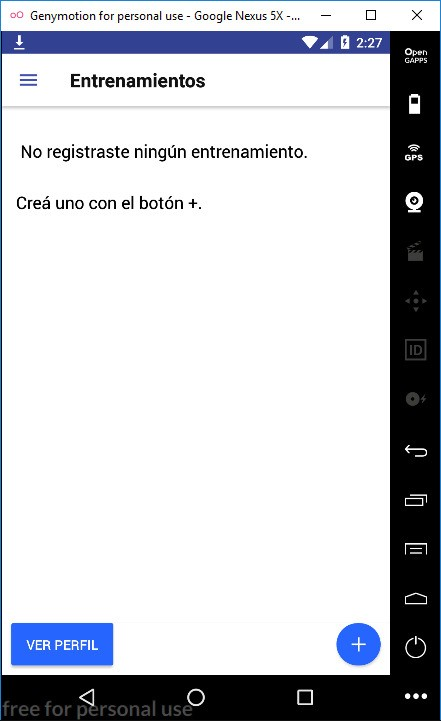

Para realizar entrenamientos primero debemos iniciar sesión.
Si no posee usuario en la esquina inferior tiene la opción para hacerlo, y la siguiente pantalla aparecerá. Complete con sus datos y pulse “Registrarme”.

Una vez que inicie sesión podremos ver los entrenamientos ya arrancados o agregar uno nuevo.
Si decidimos crear uno nuevo debemos elegir su título y si el mismo es un entrenamiento de fuerza o de velocidad.
Si se ingresa a un entrenamiento en particular se podrá observar la lista de golpes realizados, junto con la posibilidad de seguir entrenando o de ver el gráfico de progreso.

Cuando se entrene se requiere primero debe emparejar su Taekwongo Band y ya podrá tomar las métricas.